来源：https://e2nzhrhs9a.feishu.cn/docx/SiOqd1RUPoexj7xaWt5cZsIanTW
大家好，我是段天涯，主要做高客单这块业务。
出国旅游是我目前在做的业务之一，个人已经跑通了 0-1，1-10，目前正努力在放大。
旅游是一直存在的需求，且比较扁平化，一直都能做为副业，赚点小钱。
⬇️ 以下内容主要涉及出国游，国内游同理
做旅游按顺序可以分为三步：1 获客，2 转化，3 交付。
做获客 + 转化，然后和旅行社对接合作，客人付款成交后直接给旅行社交付就好。
使用合作商旅行社的营业执照+经营许可证，作为 “销售员工”，给合作商 “带货”，只不过这里的货变成了旅游团。
“代理” 旅游团，省下旅行社经营成本。
先说第三步交付，
分为三类：组团社/批发社/地接社
直接对游客销售，散拼组团，满足批发社规定的最低成团人数即可发团，属于市面二手，也可以理解为经销商/渠道商/代理商，相当于分销 / cps 赚佣金返利
举例：
1.1）某程某猪某牛某哪某程等平台（这些平台也有自己设计的自营产品，但基本都属于边缘）；
2.2）一些常见或不常见原创名字的旅行社大都是组团社，一般规模很小，没有自己设计旅游团产品的能力。
国家地区：
一般只做一个国家，或一个国家的某个地区
通过整合地接社资源，来设计旅游团产品，属于市面一手，即批发商/供应商/专线（因为是和批发社合作，所以文中提到合作商一般指批发社）
2.1）一部分只对接 B 端组团社，再由组团社散拼游客
2.2）另一部分不只对接 B 端组团社，还会直接对接 C 或 B 端游客。这种情况就绕过了组团社直接成交，涉及到比价问题，所以一般会和同业把利润空间同步。
ps. 一般批发社也会代理同行批发社的团，这样同时做组团社，以丰富产品给客户更多选择
国家地区：
有的集中做某个国际地区。比如欧洲，中东非，澳洲，美洲南北极，高加索中亚巴尔干，亚洲等一个地区或多地区组合；有的只做一个国家，这种较少。
与批发社直接合作，负责在目的地接待批发社过来的团，属于真正一手，直接接触游客
（所以大家自己跟团旅游的话，找地接社相对来说是最省钱的。但相对找批发社来说，相应的筛选工作就变多了。但也有例外，比如国内飞中美洲的免签国古巴，个人往返机票 1.5w 起步，但包往返机票/酒店/用车/门票/餐食几乎全包的国内出发团价格甚至不到 2w，很明显性价比在那摆着。）
ps. 虽然有时组团社也会和地接社直接合作，但从我直接接触过的不止一个组团社老板来看，Ta 们对地接社的了解一般不如批发社，所以处在组团社和地接社之间的批发社作用就显得比较突出了。
可以把批发社理解为一个平台，对上下游合作商（即组团社和地接社）有话语权，方便整合资源。
关系：地接社加利润👉批发社设计成团加利润（加利润后即结算价）👉组团社统一售价。批发社一般称组团社为同业
批发社的出境游标品团给到同业的返利比例，是统一的。
如果给客人优惠成交，从总返利减去优惠
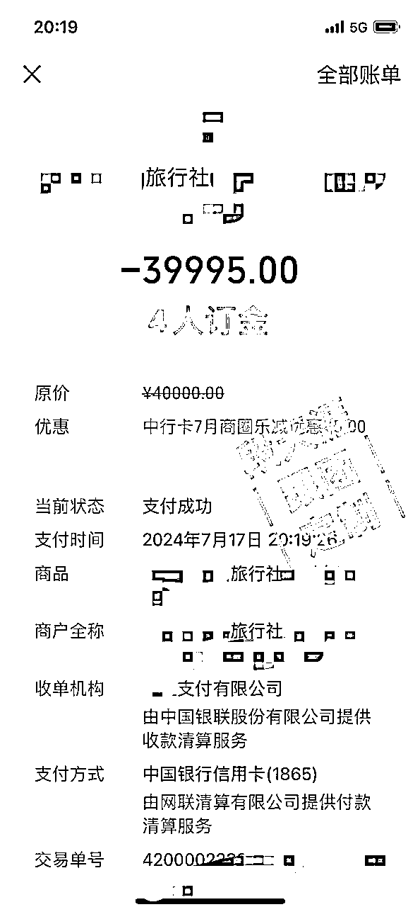
上图是成交的一单 4 人的某发达国家团，客单价 3w 出头。⬆️
1，最早的可以在客人付尾款（全款）的第二个工作日返利；
2，稍早的可以在客人出发的第二个工作日返利；
3，一般是在客人回团后的一周内返利；
4，最晚的有在客人回团后的第二个月才返利。
主要看合作商的具体情况，有的要走财务需要时间，有的有自主权。另外，有的合作商表示客人付款时详细备注会影响返利时间。
1，客人要求开发票，需要成本，从返利里面减
2，有的合作商优先选择扫码支付，这就有提现成本，从返利减（对公银行卡转账没有提现成本）
3，有的合作商需要少许操作费，从返利减
4，具体合作商可能的其他成本
首先理清关系：我们是帮旅行社销售他们的产品，我们得到返利，旅行社得到营业额，属于双赢，所以一般情况下旅行社没理由不和我们对接。
不过有的旅行社不合作，比如只对接 B 端同业组团社的批发社，比如怕承担风险+不舍得分利润的个人组团社等。
建议对接的旅行社：风评较好的批发社，冲营业额的大中型组团社；或者也可尝试筛选合作地接社。
对接考察：
一是到手利润，如果给不到和同业差不多的返利比例，直接 pass；
二是响应速度，如果速度较慢，那就需要对接第二家了，因为客人等不了，所以建议手头至少有两家在合作；
三是处理态度，合作过程中会随时出现各种问题，双方能否磨合融洽，稳定合作下去。
再说第一步，获客，就是从各大公域平台引流到私域
包括但不限于小红书/视频号/抖音/公众号等
如果你有旅行社营业资质认证蓝 V，
就找优秀同行对标账号，学习爆款帖子就好了。直接营销直接卖团，简单粗暴。
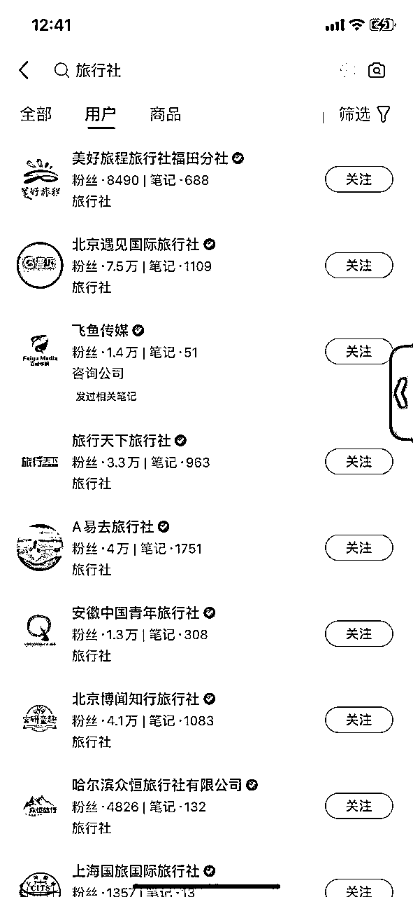
如果没有旅行社蓝 V 号，其实也可以比较直接的营销卖团。
以下面 2 张截图的这个国内同行为例：只写攻略就好了，很容易有流量。
建议从两方面 “生产” 笔记，一是攻略内容，这个就需要用心去查找学习整理；二是好用的攻略，可以多种形式生产出图文甚至视频笔记，只要在小红书平台受欢迎。
然后，评论区置顶评论引流。置顶评论一是要让人知道你是家旅行社，二是为什么要选你家的团。话术要圆润一些，不可生硬。还有，敏感营销词要规避，不然置顶失败。
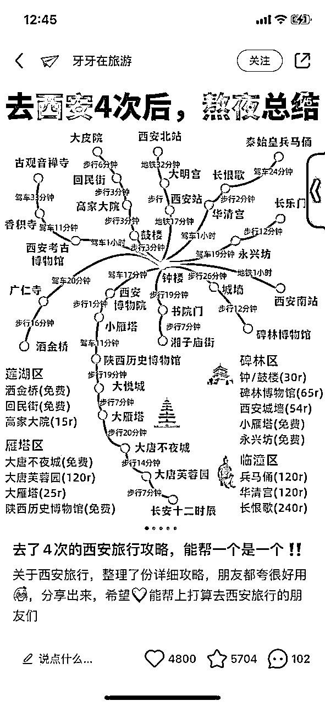
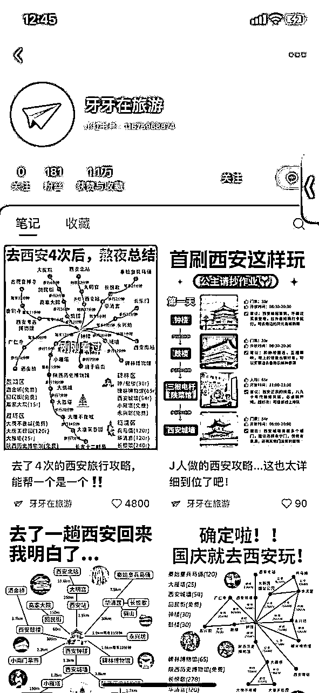
关于截流，
比如这篇笔记评论区下面那俩人，很明显是截流的。
截流长期不可取，短期也很容易违规封掉评论功能，所以不建议花精力。
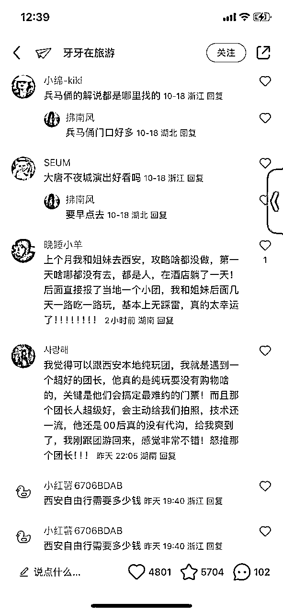
也是：有蓝 v 上蓝 v，
没有的看看这种账号
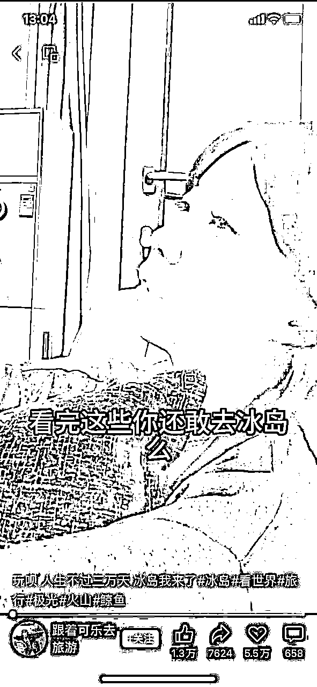
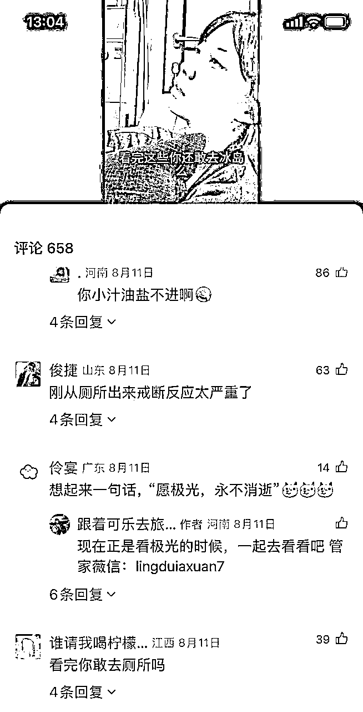
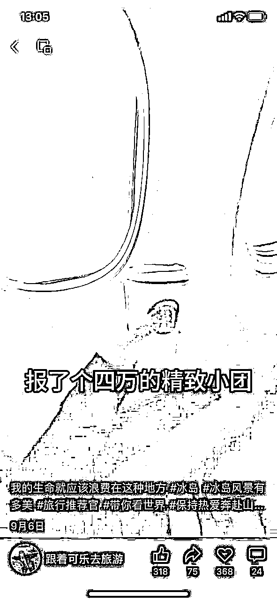
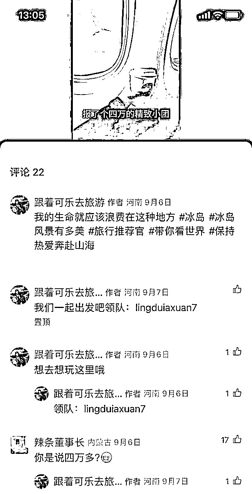
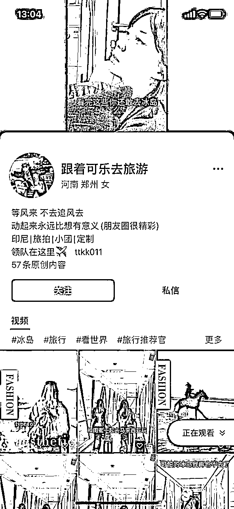
以上 5 图是视频号，抖音同理。
也是：有蓝 v 上蓝 v，
没蓝 v，也一样能做蓝 v 的事，已测试不会违规。
前面写内容（攻略或营销，最后留钩子，最开始也可以留）
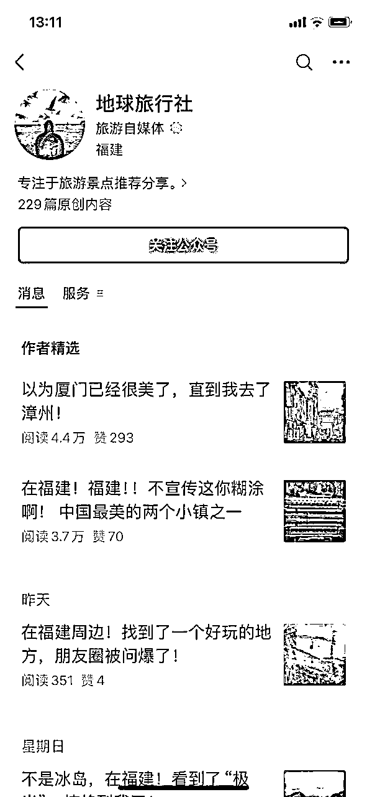
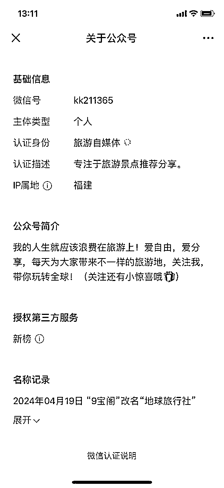
🌟 有意向客人主动私信后，注意安全承接流量就好。
南北半球的夏季冬季
西欧/南欧 等老牌发达国家
日本/印尼 等较近国家
因为北美南美南北极的相对特殊，所以做这些地区的人不多
比如美加两国即使参团也只能办个签，因为没有团签这回事，这一点直接把很多人拒之门外（然后中南美洲国家的签证一般需要美签，这又同样是个门槛，毕竟是美国后花园）
此外还有东欧/非洲/巴尔干/高加索/中亚，以及海岛游（有专门做海岛游的旅行社）
客单低于 1w 的国家，虽然都卷麻了，但日本/印尼还是相对值得做。
韩国/新马泰，普通团客单价实在太低，想赚钱只能像国内团一样走量。
日本相比韩国，相对较大，更多可玩，客单高点；
印尼相比新马泰是东南亚距离中国最远的旅游国家，旅游景点除巴厘岛外还有火山🌋 / 科莫多岛（最著名的是地球上最大的蜥蜴——科莫多龙）等，这些地方很多人没那么熟悉。不过随着时间推移总会变卷，因为客单价不够高。
ps. 以上国家选择基于普通跟团，也就是固定服务内容流程的标品，而非基于定制团。
这是第二步，就是获客加到旅游业务号微信后，来转化成交，说白了就是销售。
首先要了解客人的准确需求
游玩国家，出发城市，出发日期，游玩天数，人数预算，有否签证等这些基本信息。
尤其是人均预算，虽然有的客人没概念或不想说，但最好问出来，因为可以帮助准确筛选合适团
1，欧洲申根区有 26 个成员国，需办理申根签证，比较看重在职证明来给你的资料 “打分”（而澳洲就没有那么严格）。如果客人看中法意瑞三国连线团，并且看中法国深度，那么这个团一般是在法国停留时间最长，办的就是法签，否则可能有入境问题。
2，日本团签是按照户籍分领区的，比如上海江苏浙江安徽江西 5 地属于上海领区，如果走团签则必须走上海领区出发的团。而个签就不存在这个问题，任何领区都可参团。
3，落地签/电子签/eTA授权等属于类免签，给钱就拿签证
4，常见旅游国家是免签国家还是签证国家，要搞清楚
天气温度，必须了解
地理人文，基本了解
全球所有旅游国家和地区都有纯旅游团，包括南北极邮轮团
ps. 台湾团由于特殊原因，暂时无法成行
顾名思义：边玩边学。
比如欧美澳新等教育发达国家；
比如非洲等地区的自然研学；
比如日本的商务考察团
比如欧美澳新非洲
比如日韩东南亚
国内主要有 4 个出入境中心，覆盖华北/东北的北京，覆盖华东/华中的上海，覆盖华南的广深，以及覆盖整个西部的成都。
从国内城市参团的旅游团，从这 4 个中心统一发团的占绝大多数。
和国内参团区别是：不包往返国际段机票 + 不包签证。
受众一般是常驻海外的客人，或国内自备签证自己买机票的客人。
一是组团散拼的标品团，二是独立成团不拼人的定制团。
即任何内容都是固定的，如果因为任一条件无法成行，要么换团或换目的地，要么就选择价格较高的定制团。
1.1 出发城市固定
比如上海发团，那就必须统一上海出发，常住其他城市的客人如果想参加就必须赶过来，有的团可以联运（即从客人城市调配航班联运到出发城市，一般执行旅游团国际航班的同一家国内航司）。
1.2 出发日期/参团天数固定
日期和时间是绝对不会更改的，这一点相对来说是最直接影响成交与否的因素。
1.3 行程固定
除了夏季冬季这种明显不同的季节差异，以及景点关闭临时换景点外，一般情况下行程是不会变的。
定制团主要看合作商的价格优势，客人会把定制需求给到不止一家让报价，然后一般会选择最低的那个，所以优先和地接社合作。
因为是非标品，最大的优点也显而易见 —— 自主定价。地接社给到结算价，也就是成本价（“进货价”），加完利润报给客人就好了。
具体加多少：要看行程具体情况，参考过往成交均价；还要看客人情况，俗称 “看人下菜碟”。
还可以像电商学习，先涨价再折扣。比如你想赚 12% 的利润，那就先加 15% 报价，留给客人 3% 的砍价空间。
以下面新西兰团为例，做一下拆解
首先从海报从上往下可以得到以下信息：
1，外航新西兰航空执飞
2，行程是纯南岛 8 天，没有去北岛
3，行程亮点：蓝冰洞/库克山国家公园/直升飞机塔斯曼冰川徒步（从海报的两幅主图也可以看到）；以及皇后镇两天自由活动
4，住宿亮点：皇后镇 3 晚湖景房连住
5，餐食亮点：列出 5 行，西餐中餐兼具
6，团期价格：可以看到有 10/11/12 月三个月份分别一个团期，价格都是 25800。
从海报得到信息不够详细，我们从海报右下角扫码查看详情文件：
最上面是条 1 分钟的宣传视频，方便客人快速以视频方式查看团信息。
然后往下，可以看到更详细的团信息，
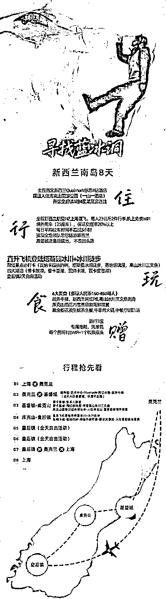
住
相比海报新的信息：
1，全程指定当地 4 钻酒店
2，保证入住库克山国家公园（一山一酒店）
3，海报写的 “皇后镇 3 晚湖景房连住” 是 4 星
行
相比海报新的信息：
1，上海直飞，航班免费托运限额每人 23 公斤 2 件行李，然后航班免费 WIFI；
2，行程使用 25 座车，并且保证空座率 20% 以上，也就是车上最多 20人，且每日平均拉车时间不超 3 小时（南岛狭长，这个时间不算久）；
3，资深全陪领队；
4，路线是从基督城进入，从皇后镇离开。
玩
1，乘坐直飞飞机登陆塔斯曼冰川，然后冰川徒步
2，网红景点打卡，四大湖
食
6 大美食（餐标人民币 150-450 每人）
中餐有：牛羊肉火锅，中餐厅 8 菜 1 汤
赠
旅游三宝（充气小靠枕/眼罩/小耳塞）；拖鞋/洗漱包
每个房间 1 台 WIFI，还有赠送转化插头
继续往下，可以看到每天行程，一路向南
1，首先首尾两天是上海往返奥克兰，并且往返都从位于北岛的首都奥克兰转机（基本没有开通国内直飞南岛航班）
2，Day 2 行程是首先奥克兰飞基督城，然后玩/吃。然后我们看到有说明：当天入住基督城，休整不赶路。
3，Day 3 行程是基督城到库克山，然后吃/玩。标蓝字体：入住库克山，雪景自助海鲜晚餐。
4，Day 4 行程是库克山到皇后镇，然后玩（吃什么没有看到写）。标蓝字体：直升飞机登陆塔斯曼冰川+冰川徒步，入住皇后镇湖景房。
5，Day 5/6 行程是皇后镇 2 天自由活动
继续往下，可以看到行程景点配图
直升飞机冰川徒步项目约 3小时；
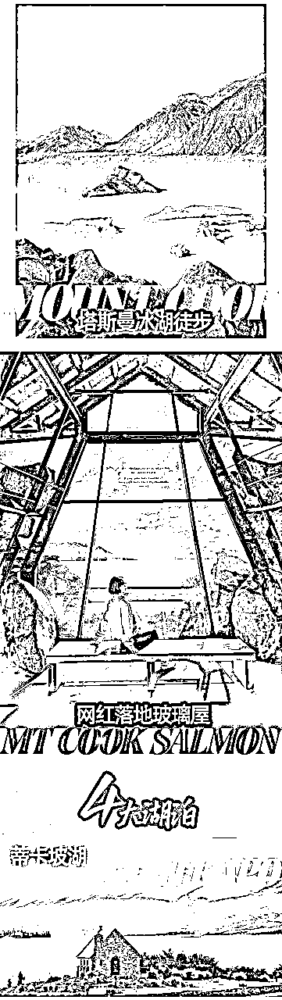
网红景点：瓦纳卡孤独的树/落地玻璃屋；
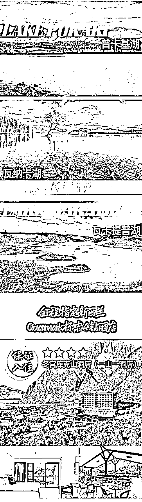
4 大湖；
库克山酒店是冬宫，4 星
ps.下一张图片相比之前没有新信息，略过。
继续往下，可以看到航班和用车详情，
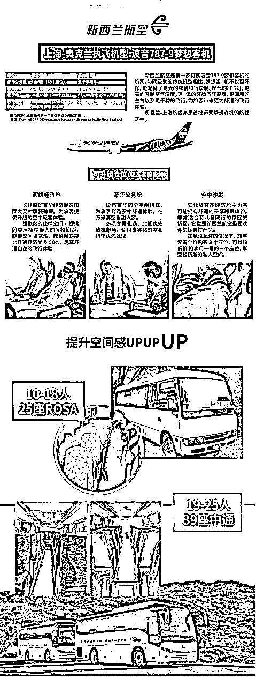
航班：
1，执飞机型是波音 787-9
2，默认经济舱在 34 至 65 排，座位 263 个，座位间距 78-83 厘米
3，提供三种可选升舱并介绍详情：超级经济舱/豪华公务舱，空中沙发
用车：
1，实际可乘坐 10 - 18 人的 25 座 ROSA；
2，实际可乘坐 19 - 25 人的 39 座中通。
实际乘坐哪种车型根据实际参团人数决定，并且都保证了空座率。
继续往下，可以看到更详细的行程文件，
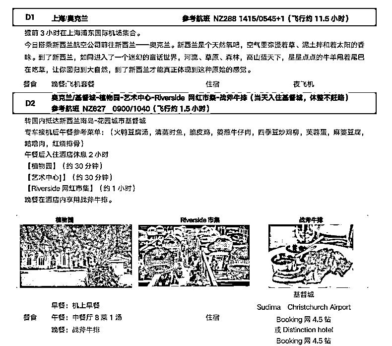
Day 1
新西兰航空（NZ），下午 14:15 上海起飞，飞行约 11.5 小时，晚餐是飞机套餐，第二天早上 05:45 落地奥克兰；
Day 2
落地后约 3 小时，早 9 点起飞，早餐是飞机早餐，飞行约 1.5 小时，10:40 落地基督城；
专车接机，然后午餐是中餐厅 8 菜 1 菜，午餐后入住酒店休整 2小时。
三个景点共游玩 2 小时，晚餐战斧牛排。住宿具体酒店及星级也有列出。
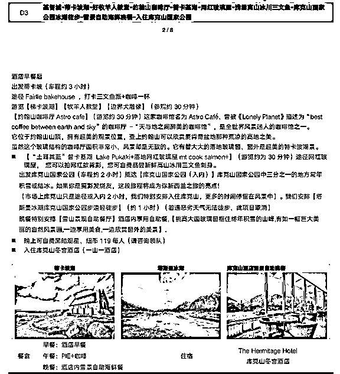
Day 3
酒店早餐，拉车 3 小抵达，途经打卡一个网红景点，午餐是三文鱼派+咖啡一杯，午餐后游玩三个景点各 0.5 小时。
然后拉车 2 小时抵达库克山国家公园。并特别说明：“市场上库克山只是途径或入内 2 小时，我们特别安排入住库克山，更多的时间停留在风景中。我们安排【塔斯曼冰湖库克山国家公园步道轻徒步】（约 1 小时）（若遇恶劣天气无法徒步，此项目取消）”
晚餐是酒店内雪景自助海鲜餐
晚上咨询领队可自费黑暗观星，纽币 119 每人
入住 The Hermitage Hotel 库克山冬宫酒店（一山一酒店）
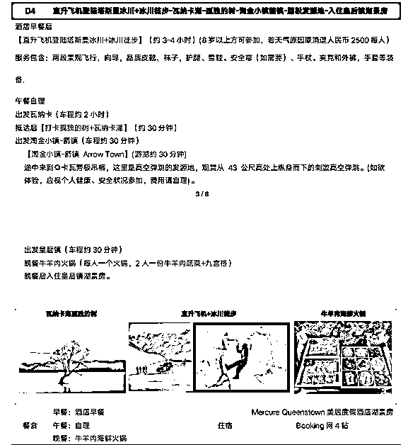
Day 4
酒店早餐后 【直升飞机登陆塔斯曼冰川+冰川徒步】（游玩时间约 3-4 小时）(8 岁以上方可参加，若天气原因取消退人民币 2500 每人），然后列出了包含的服务。
午餐当地自理，拉车 2 小时抵达瓦纳卡，打卡景点 0.5 小时；然后拉车 0.5 小时抵达淘金小镇-箭镇，打卡景点 0.5 小时，其中有说明：(如欲体验，应视个人健康、安全状况参加，费用请自理）
然后拉车 0.5 小时抵达皇后镇；晚餐牛羊肉海鲜火锅（每人一个火锅，2 人一份牛羊肉蔬菜+九宫格），规格不错；酒店 Mercure Queenstown 美居度假酒店湖景房 Booking 网 4 钻
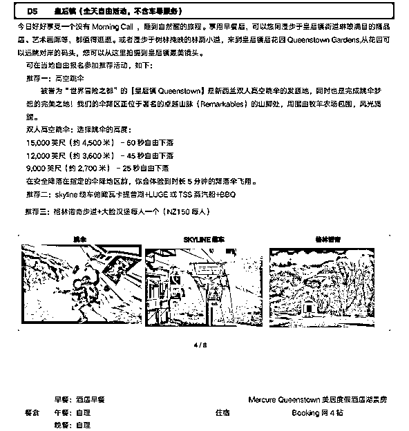
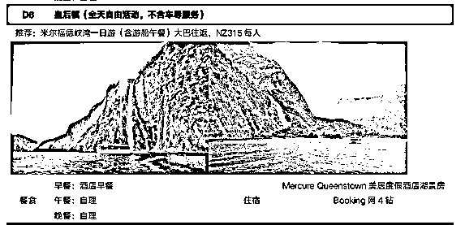
Day 5/6
皇后镇两天自由活动，推荐了 4 个自费游玩项目。酒店早餐，正餐自理。
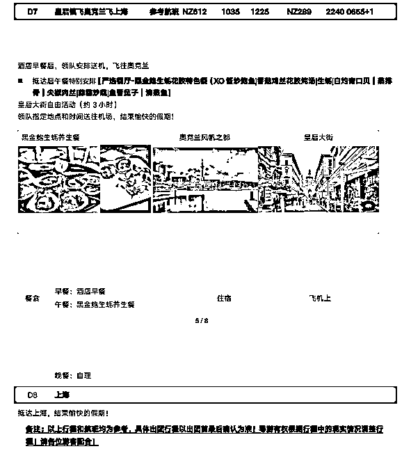
自费项目的更多细节在后面可以看到，
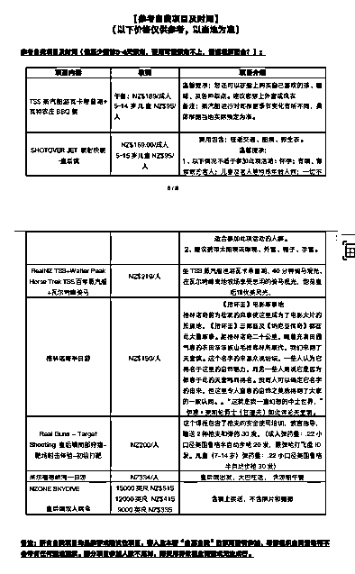
Day 7
酒店早餐后，领队安排送机，10:35起飞，飞行时间约 2 小时，12:25 落地奥克兰；
午餐是黑金鲍生蚝花胶特色餐，皇后大街自由活动 3 小时；
然后领队在指定地点和时间送机。
Day 8
第七天晚 22:40 起飞，第八天早 7点 左右落地上海，结束行程。
继续往下，可以看到重点：包含与不含
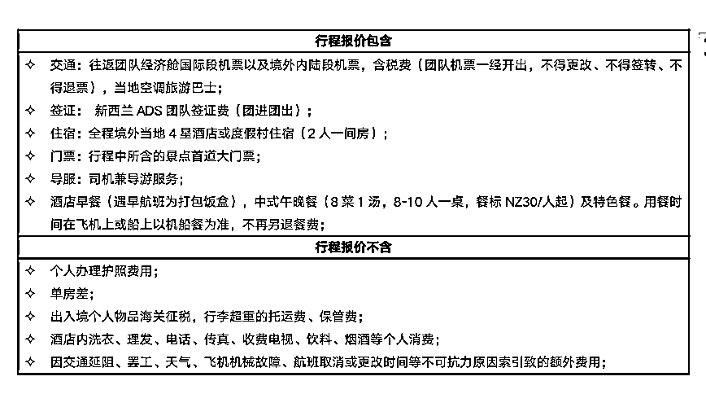
包含：国际和境内内路段往返机票/用车/团签/酒店/首道门票/司兼导/酒店早餐及部分午餐（且不退餐费）；
不含：主要是单房差。因为旅游团默认标间，单人参团或单数人单团，就要拼房，如果拼不到就要付单房差。
因为客人选团主要是看性价比，所以这种基本全包的标品团比较受欢迎。
所有详情都有了，但还是感觉缺了什么。团的人数
任何宣传物料都没有看到写人数，这时就要询问合作商了。
包括最多容纳人数，以及部分客人会关心的最低成团人数，因为对旅游团有些了解的客人会担心无法成团。
还有询问客人意向团期的剩余位置，以及团签资料截止日期是否来的及。因为有些客人第一次参团，并不清楚要提前多久报团。
到这里，旅游团拆解结束。
从海报到扫码后内页配图，再到行程详情文件，逐渐变得详细。（宣传物料）
海报是用来快速筛选团，及时回应客人出行需求给客人看的，不至于让客人等比较久。
扫码后的更多详情是重点给客人推荐某个团，或客人看中某个团后，才会继续关注。
每个团基本都是这样的结构，有海报和扫码后进一步详情组成。
其他团也是同理，只是不同国家地区可能些许不同。
拆解的团多了，自然就会很快找到客人某个问题的答案。
（tips：使用 kimi 等 AI 工具来拆解旅游团详情文件，可以省一些工作，不过并不准确，很多信息提取不出来，甚至有错误，所以还是需要人工学习。不过每个国家或地区常见的/比较受欢迎的团基本都是固定的，因为大中型旅行社就那些家，情况还是比较稳定的。）
继续往下，
可以看到新西兰入境小贴士，对第一次前往的客人来说很有必要
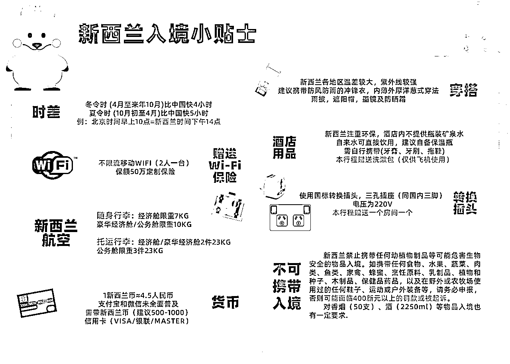
继续往下，
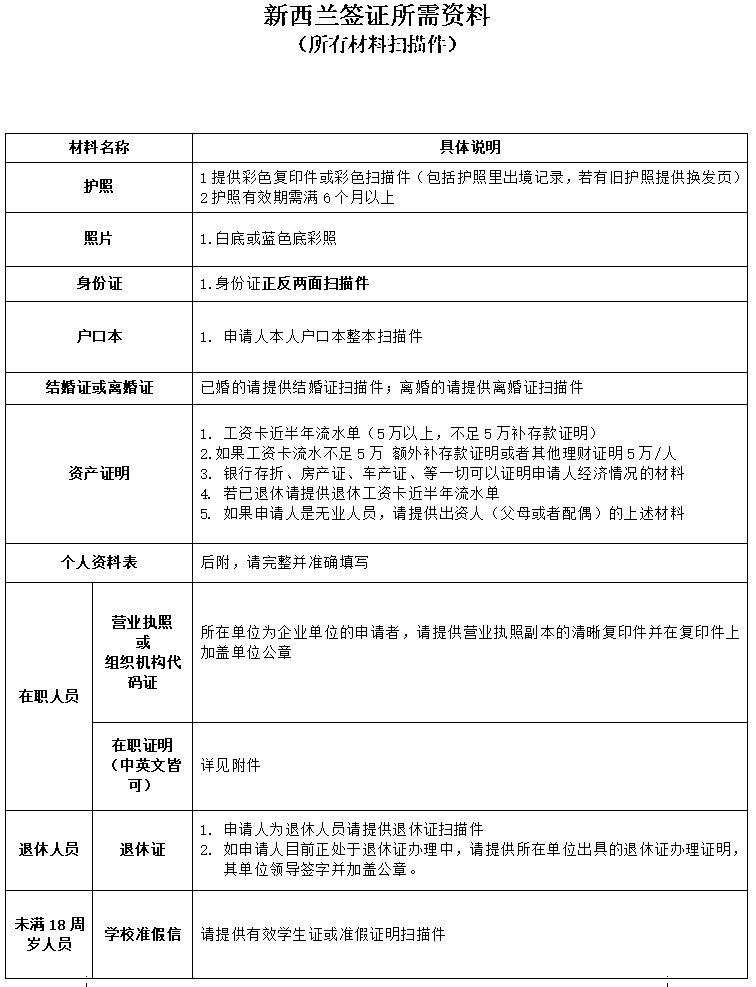
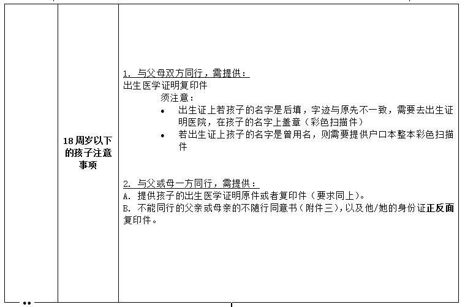
新西兰签证所需资料（所有材料扫描件），除基本资料外，主要是资产证明 + 各类人群证件。
比如企业在职要提供营业执照+在职证明；退休要提供退休证；未成年要提供准假证明/父母关系证明/成人陪同等。
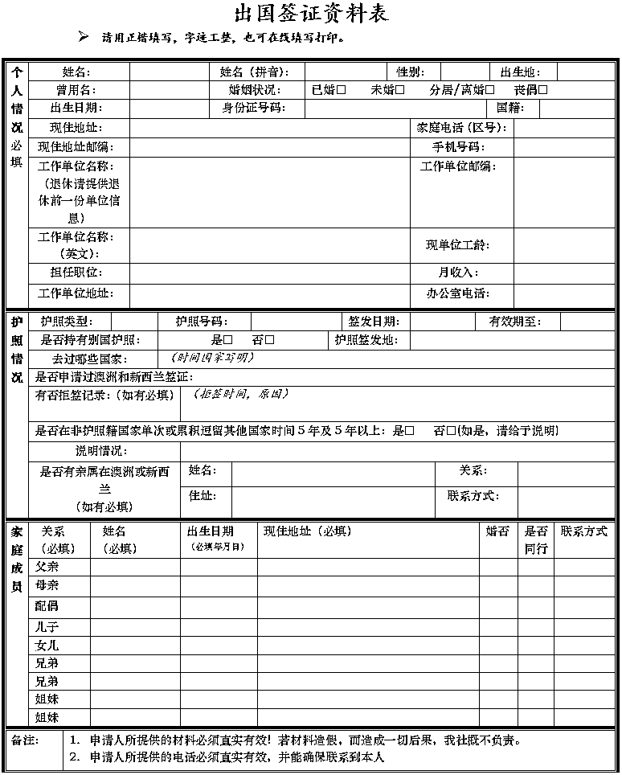
出国签证资料表，注意必填选项，尤其 “有否拒签记录” 直接影响客人签证。
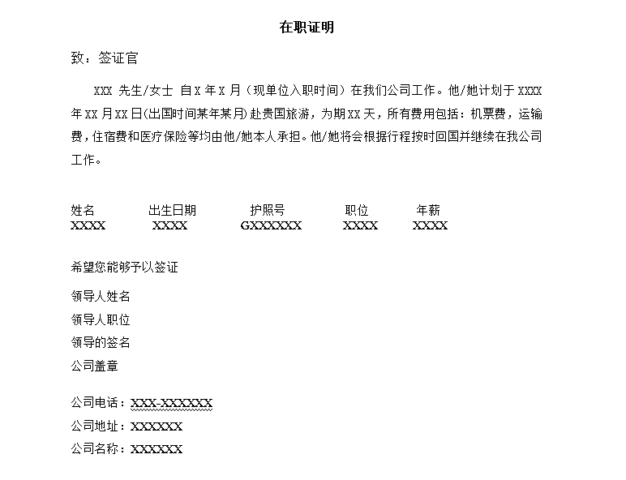
还有在职证明⬆️
虽然以上三个资料，可以在客人付款成交后，交给合作商来处理。
但是必须要基本了解，因为客人常常会问到签证是否容易通过，这时需要及时准确回复客人，让客人安心报团。这是必知必会的售前知识。
此外还有：成交后适当跟进一下进度，确保客人出行无误。
上文没有提到的其他售前知识：
最多容纳人数：比如最多 20 人，一般是 19 游客 + 1 领队。但旺季/公共长假有的团会多塞人，这一点要看具体的合作商。
最低成团人数：必须满足，否则批发社不发团。
如果没有满足，一般会顺延到下一个团期。比如 10 月 15 日出发的团期最低成团人数是 9 人，结果到了截止日期实际报名6人，所以没有成团。然后后面一个团期 10 月 22 日出发，一般会把这 6 人顺延过去，以满足最低成团人数来发团。
ps.如果顺延后有游客时间不合适，导致到手的单子跑了，可以尝试推荐其他团。
定金
订团当天就付，付款定金+护照首页来占位，口头占位不付定金的话随时会被清位。
具体定金多少，由合作商来报。每个团不太一样，看每个国家或地区，看标品或定制，看团成交价格。
尾款
要看合作商的情况，有的要求统一送签时付尾款，有的要求出发前半月一周时间不等。
（相当部分团，规定在出发前 30 天内订团的，一般直接付全款。30 天外的，先定金再尾款。）
1）客人上来就问你们是什么旅行社
营业执照/经营许可证肯定要发，但发之前最好 “交换信息”，同时问出来客人的出行需求。因为有可能是客人带着目的来比价的，也有可能是同行。要保持高效，就要快速筛选除了客人是否真的有出行意愿。
2）客人得知批发社旅行社后，问在其他家也看到了同样的团是怎么回事
可回答是长期合作商，一起来为您服务。
3）客人问的问题在团宣传物料没有被提及，比如有的团不会写用车型号/实图/座位数/空座率等，比如有的团不会写每天拉车时间（而这一点客人一般比较在意）
一定要跟合作商确定好细节准确无误后，再回复客人。
4）客人问酒店长啥样，有无实图
去酒店预订平台查找发给客人就好
5）客人要优惠
其实情绪价值这种东西有点玄学，因人而异，有的客人不吃这一套。毕竟大部分客人选的是标品团，只要有客人有比价意识，说什么都没用。一般就是承诺有任何问题会第一时间解决，具体也看服务过程中与客人交流情况。
以及客人回团后要不要送点别出心裁的小礼物，答案是分人。认识一位做了多年旅游赚到七位数的老板，说没有任何 “礼品”，来促成复购或转介绍，但是也不耽误开了多单三位数的客人一起出行，一单赚六位数。
6）客人问为什么还没出发就要付尾款全款
出发前旅行社需要统一给客人订机票/酒店/用车等，而定金明显不够。
7）客人不回复了怎么办
最多再问一次，不再多问。出行意愿强的人会回复的，然后通过旅游业务微信号的朋友圈去触达。
8）客人问可不可以中途加入只参加后段，或参加前段中途脱团
前者部分团一般可以，但价格不变。
后者不可以，旅行社不允许客人脱团。
9）客人问国际往返航班只参加一段可以吗
不可以。因为旅行社统一出的套票，要么往返两段都不参加，要么都参加。即使不要求退款只参加去程一段也不行，因为有跑路风险，旅行社大概会被罚几十万/人。
10）客人问可以在某程这种平台下单吗，有线下实体店吗
看合作商具体情况，我们无法选择。
如果不能在平台下单，可以告诉客人：平台会收取费用，而这部分费用会加到客人身上，所以不走平台对客人划算。
线下实体店的话，批发社一般只有公司地址，对 C 端直接交给有线下实体店的组团社了。所以也可以从价格划算这个角度来说服客人。
🌟 最后再说下，相较做出境游，做国内团的优缺点
优势：一是不用签证说走就走，二是价格友好。和免签短线或日本这种短线团非常类似。很容易出现多人参团的情况，低客单需要走量赚钱。
劣势：一是非常非常卷，二是 “你懂得” 的原因，导致部分地区好评率较低。建议只做边疆，远离城市 + 景点之间距离较远。
完。